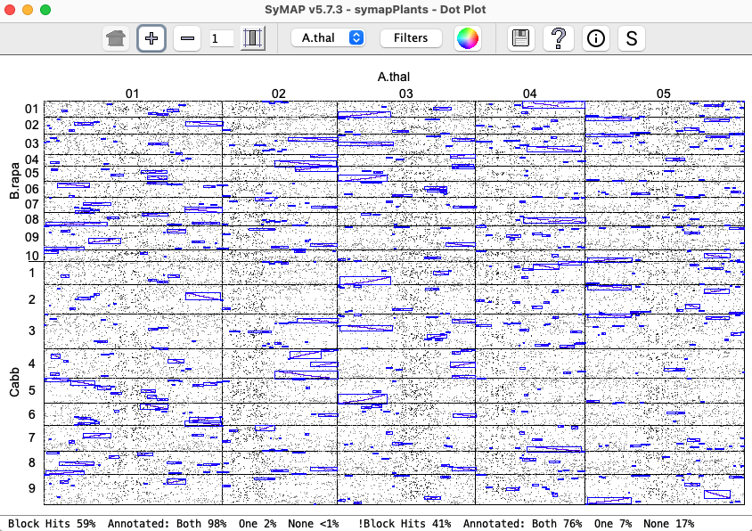
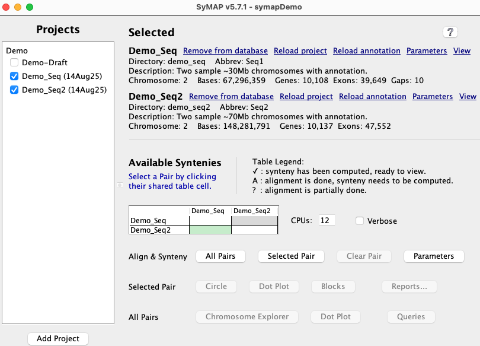
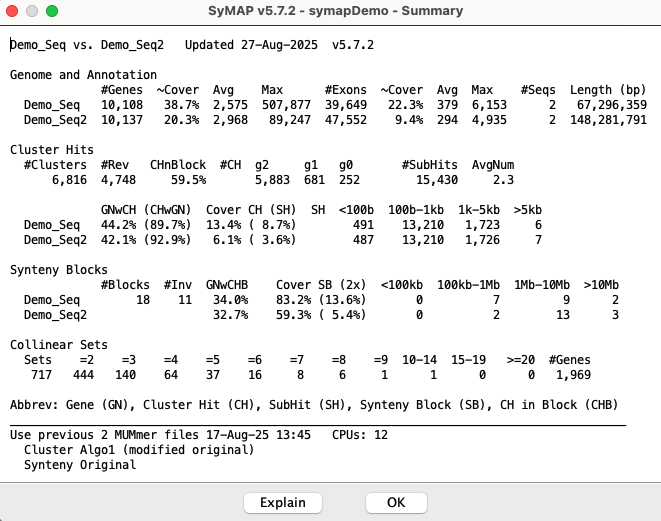

|
| SyMAP System Guide |


| |
| |||
| This document discusses building a SyMAP v5 database. It always applies to the latest release. | |
| Contents | |
| Referenced external docs 1. Introduction 2. Requirements 3. Install SyMAP | 4. Demo 5. New project 6. General |
| For Transcriptome Analysis and Comparative Transcriptomes, see TCW. | |
1. Introduction
Overview and Publications | Go to top |
| 
|
|  | 
| 
|
{kind=link}
Publications
SyMAP is freely distributed software, however if you use SyMAP results in published research, you must cite one or both of the following articles along with the external program MUMmer1,2.
C. Soderlund, M. Bomhoff, and W. Nelson (2011)
SyMAP: A turnkey synteny system with application to plant genomes.
Nucleic Acids Research 39(10):e68.
C. Soderlund, W. Nelson, A. Shoemaker and A. Paterson (2006)
SyMAP: A System for Discovering and Viewing Syntenic Regions of FPC maps
Genome Research 16:1159-1168.
The back-end processing of SyMAP runs MUMmer1,2 for the alignments (included in the tarball)
and computes the synteny block from the alignment results. The SyMAP synteny algorithm is described
in the above two publications, though there are many unpublished updates since publication.
Steps for finding synteny | Go to top |
| Format files from NCBI and Ensembl into a SyMAP friendly format. | ||
| Build the SyMAP synteny database; view and query | ||
| View and query the database results |
Follow the steps below to get started with SyMAP.
| 1. | Use a Linux or MacOS machine. | It needs sufficient processing power.
See system requirements. |
| 2. | Requirements. | Set up Perl, Java and MySQL . |
| 3. | Install SyMAP. | It is a simple unzip; see Installation. Set the MySQL parameters for SyMAP. |
| 4. | Run the demo. | Highly recommended. See running the demo. |
| 5. | Prepare input files. | FASTA sequence and optional GFF annotation.
See Creating a new project and Input. |
| 6. | Load the files into SyMAP. | Select See Loading project. |
| 7. | Compute alignments and synteny. | Select See Alignment&Synteny. |
| 8. | View results. | See User Guide for a detailed description of viewing and querying the results. |
2. Requirements
System Requirements | Go to top |
The largest component of SyMAP execution time is running MUMmer1,2.
The time and memory for MUMmer all depends on the genomes sizes, complexity and similarity.
If MUMmer fails, it is often due to insufficient memory, see the
MUMmer document, which
explains how to determine the problem and ways around it. And it explains how
to run MUMmer on a different machine and port the
results to the
If SyMAP runs out of memory, see Trouble Shoot.
For viewing alignments, CPU and memory needs are typically negligible, unless you are performing queries on more than 4-5 genomes at once.
Tested platforms and timing results | Go to top |
| Machine | MySQL | Java | Core (CPU) | Memory | Purchased |
| v5.6.6 and later: | |||||
| MySQL v8.0.42 | 24 from Oracle | M4 12-Core | 48Gb | 2025 | |
| v5.4.1 and later: | |||||
| MySQL v8.0.33, MariaDB 11.0.2 | 8, 15, 17, 18, 20 from
Adoptium and Oracle | 3.2 GHz 6-Core | 64Gb | 2018 | |
| MySQL 8.0.33 | 17 | Nanode | 1Gb | 2023 | |
| v5.4.0 and earlier: | |||||
| MariaDB v10.4.12 | 1.8 | 2.3 GHz 24-Core | 128Gb | 2011 | |
Times are those reported in
the SyMAP output, which uses the Java system time functions (clock times
are greater than the Java CPU system times). Repeated execution can result in times
varying by approximately +/-5secs. In the tables below, the two times by each genome pair
are:
MUMmer alignment (hour:minute), SyMAP clustering&synteny (minute:second).
All the following results use 4 CPUs (thread/core).
- MacOS M4 with
48Gb has been tested with the following:- The complete Homo sapiens (24 chrs, 3Gb) with Mus musculus (21 chrs, 2.7Gb).
To get MUMmer to run successfully, it was necessary to uncheck Concat.Time Hsa x Mus 30h:45m, 1m:37s 24x21 pairs, large genomes - Arabidopsis thaliana (5 chr, 119Mb), Brassica rapa (10 chr, 297Mb),
Brassica oleracea (9 chr, 447Mb).
Time A.thal x B.rapa 0h:11m, 1m:13s 5x10 pairs A.thal x B.oler 0h:31m, 1m:14s 5x9 pairs B.raba x B.oler 4h:23m, 4m:12s 10x9 pairs, closely related - Chr 5,17,X,Y of Homo sapiens (478Mb) and Pan troglodytes (447Mb);
Chr 11,13,X,Y of Mus musculus (504Mb); Chr 11,19,X of Oryctolagus cuniculus (257Mb).Time Hsa x Pan 16h:40m, 0m:35s closely related Pan x Mus 0h:45m, 0m:05s Hsa x Mus 0h:55m, 0m:04s Pan x Ory 0h:39m, 0m:02s Hsa x Ory 0h:34m, 0m:03s Mus x Ory 0h:44m, 0m:03s - Peach Prunus persica (8 chr, 227Mb) and draft Prunus yedoensis (250 scaffolds, 408Mb).
Pyeudo.Peach was the result of ordering Pyedo against peach (8 chr, 270Mb).Time Peach x Pyedo 0h:44m, 6m:51s Pyedo ordered by peach Peach x Pyedo.Peach 0h:40m, 0m:20s
- The complete Homo sapiens (24 chrs, 3Gb) with Mus musculus (21 chrs, 2.7Gb).
- MacOS x86_64 with 64Gb has been tested on 2-4 above. Only a few timings are shown below for smallish more distant
genomes; note the longer synteny times on this older machine.
Time A.thal x B.rapa 0h:23m, 3m:58s A.thal x B.oler 0h:33m, 4m:06s - Linode nanode with 1Gb was too small to run MUMmer, so the MUMmer demo result files were transfered to the
data/seq_results/demo_seq_to_demo_seq2 directory. This allowed all other features to be tested on the demo, including running the synteny algorithm without the alignment. Also, two tiny input files were used to test MUMmer. - Linux amd64 with 128Gb was used extensively on large plant genomes.
To align rice x maize (400Mb x 2365Mb) required a total of 1h:3m using 8 CPUs
Disk space | Go to top |
You can remove the
If you do not want SyMAP to remove the .delta, use the "-mum" command line argument.
Perl, Java and MySQL | Go to top |
Java: You must have Java version 17.0.11 or later.
The released
MySQL: If your machine does not have MySQL or MariaDB, download and install it. For example, MySQL can be downloaded from dev.mysql.com. On a personal MacOS, simply download the '.dmg' file and following the instructions. On a work server, the system administrator may need to install it.
Important Note: The default settings of MySQL are poorly suited for large-scale data storage. You will want to adjust the parameters innodb_buffer_pool_size and innodb_flush_log_at_trx_commit as described in Trouble Shoot MySQL.
3. Install SyMAP | Go to top |
Installation
Installation consists of unzipping the download tarball using the command> tar -xf symap_5.tar.gzThis can be done anywhere and it creates a directory called
LICENSE README data/ ext/ java/ scripts/ symap symap.config viewSymap xToSymapData: The
External executables
TheREADME mummer/ mummer4/ muscle/ mafft/Each has subdirectories:
| Subdirectory | OS (Architecture) | Note |
| lintel64 | Linux | |
| mac | Mac OS X (x86_64) | |
| macM4 | Mac OS X (M4 silicon) | No muscle executable |
If you compile your own executables for a different architecture, do the following:
- Under mummer and mafft, make a directory with your architecture name.
- Put the executables under this directory in the exact same way as shown for lintel64.
- In the symap configuration file (default symap.config), add a line
arch={your directory architecture name}
For MUMmer, see Executables and Using MUMmer4. On MacOS, you may also need to view MacOS externals.
MySQL parameters for SyMAP | Go to top |
| Database Parameters | |
| db_name | Name of the MySQL database, which SyMAP will create when it first reads
|
| db_server | The machine hosting the MySQL database, e.g. myserver.myschool.edu. If using your local machine, enter localhost. |
| db_adminuser | MySQL username of a user with sufficient privileges to create a database. It is also necessary for loading, deleting and running synteny. |
| db_adminpasswd | Password of the admin user. |
| db_clientuser |
MySQL username of a user with read-only access. This is only necessary if you
want a machine to run |
| db_clientpasswd | Password of the client user (if db_clientuser is non-blank). |
Example
db_name = symapDemo db_server = localhost db_adminuser = <adminid> db_adminpasswd = <password> db_clientuser = db_clientpasswd =To use an alternative file than
>./symap -c symapTmp.configThis is useful if you have multiple SyMAP databases.
4. Demo
Running the Demo | Go to top |
- Change into the
symap_5 directory. - Edit
symap.config and enter database and host information (see MySQL). - From the command line, type
./symap .
The first time you run SyMAP, it will create the database with information written to the terminal, e.g.
Creating database 'symapDemo' (jdbc:mysql://localhost/symapDemo?characterEncoding=utf8).
It will check your MySQL variables; if there are any "Suggested" changes, see Trouble Shoot MySQL.
It will also check that the provided external programs (e.g. MUMmer) are executable; if it shows any problems, see Executables. For MacOS, you may also need MacOS externals.
Synteny between two genome sequences | Go to top |
|
The | 
|
|
A link If loading the When done, the Click the |  |
|
The When done, the table will have a checkbox, signifying that the synteny is available for viewing. |

|
|
Click To view the other interfaces, see Demo Results.
Once the alignments are computed, the |  |
{kind=link}
{kind=link}
{kind=link}
Draft alignment and ordering | Go to top |
|
Load the |

|
|
Run the It is recommended that the Cluster Algo1 be used for ordering sequence. |

|
The ordering algorithm creates the following files and directories:
1. File of ordered contigs: It writes the order of the contigs along with
whether they should be flipped to a file called
2. New project: It creates a new project directory called
3. FASTA sequence file of ordered sequences:
The sequence file will contain the ordered contigs that are flipped when appropriate.
The chromosome names correspond
to the order-against project (e.g.
The new project is shown on the left side of the
|
Running the |

|
Self alignment
| To perform self-synteny, select the cell for | 
|
5. New project | Go to top |
Creating a new project
Database name: The parameterThe following gives an outline of the steps and important details of the directory structure, linking to the appropriate sections in Interface and parameters document, which details all functions and parameters.
Input and directory structure | Go to top |
Project-name:
Each project has a
Project directory structure:
Each project has a directory as follows:
/data/seq/<project-name>
The default location for sequence and annotation files is:
/data/seq/<project-name>/sequence /data/seq/<project-name>/annotationTo indicate to the
- Create these sub-directories under
/data/seq and put your files there,
e.g usingproject-name=foobar :cd data/seq mkdir foobar cd foobar mkdir sequence mkdir annotation
Move your FASTA file(s) todata/seq/<project-name>/sequence (e.g.data/seq/foobar/sequence ) and your optional GFF files(s) todata/seq/<project-name>/annotation (e.g.data/seq/foobar/annotation ) - Create these sub-directories under
/data/seq and use soft links to point to the file locations,
e.g usingproject-name=foobar :cd data/seq mkdir foobar cd foobar ln -s <location of directory of sequence files> sequence ln -s <location of directory of annotation files> annotation
- Use the
Add project button on thesymap interface (lower-left corner) to add the project name to thedata/seq directory. Use the project's parameter panel to enter the location of the sequences and optional annotation files into theSequence files andAnno files parameters.
For options 1 and 2, it is not necessary to enter the locations of the files in the project parameter panel since both use the default locations.
All sub-directories in
|
Each project is shown with its |

|
Load project | Go to top |
Alignment&Synteny | Go to top |
| See Parameters
on setting the pair parameters for the this step.
See CPU and Verbose for a description of these two options. Then select |
|
Alignment&Synteny files: The result files are in the following directories:
/data/seq_results/<project-name1>-to-<project-name2>/align /data/seq_results/<project-name1>-to-<project-name2>/finalAfter the database is complete, these can be removed. However, sometimes SyMAP version updates require the project files to be reloaded and/or the synteny to be recomputed; if these files remain, the existing MUMmer files will be used, which saves a lot of time.
The log files are in the
See Using MUMmer with SyMAP for a discussion on how it works in SyMAP, trouble-shooting, and running MUMmer externally (i.e. if your local machine does not have enough memory or CPUs, you may need to run it on a bigger machine).
Incomplete alignment If SyMAP completed the alignment, e.g. the demo /align directory will have the following files:
-rw-r--r--@ 1 cari staff 0B Apr 10 10:28 all.done -rw-r--r--@ 1 cari staff 1.2M Apr 10 10:28 demo_seq_cc.demo_seq2_f1.mum -rw-r--r--@ 1 cari staff 0B Apr 10 10:28 demo_seq_cc.demo_seq2_f1.mum.done -rw-r--r--@ 1 cari staff 541K Apr 10 10:27 demo_seq_cc.demo_seq2_f2.mum -rw-r--r--@ 1 cari staff 0B Apr 10 10:27 demo_seq_cc.demo_seq2_f2.mum.done
- The 'all.done' indicates that the all alignments completed.
- If 'all.done' does not exist, SyMAP will perform any alignments that do NOT have a corresponding 'mum.done'.
If the
Concat setting has been switched between the previous and current run, this will not work correctly. - If the user supplied the alignments (Supply MUMmer files), there may not be 'mum.done' files but there should be an 'all.done', so it is assumed they are all done.
Draft alignment and ordering | Go to top |
- Load both sequences.
- Open the pairs's Parameters panel. At the bottom of the panel, select the radio button that indicates ordering your draft against a complete sequence (e.g. Draf->Seq2).
- Run the
Alignment&Synteny . At the end, you will see a new project with the twoproject-names separated by ".." in the left panel. It will contain:- A
sequence directory with a ".fa" FASTA file. Any scaffolds matching theOrder against genome will be assigned the same chromosome name. All scaffolds aligning to anOrder against chromosome will be appended together in order with 100 N's between each scaffold. Any extra sequences will be put in ">Chr0". - An
annotation directory with a ".gff" file that specifies where the gaps are.
- A
- Load the new project. Then run
Alignment&Synteny between this new project and the original whole genome project.
If the draft sequence is in too many sequence contigs,
(1) it takes a long time for the MUMmer comparisons, (2)
the display is very cluttered, and (3) the blocks display does not work right.
Limit the number of sequence contigs by setting
Self alignments | Go to top |
| To perform self-synteny, select the cell for the same project (it turns green) followed by |
|
The Alignment&Synteny
Parameters panel has an option to set
| A better demonstration than the demo is to download Arabidopsis thaliana from NCBI, convert it with the NCBI convert script, and run the self synteny. It took 16 minutes with one processor on a Mac Mini (2018) with 64Gb main memory. The dot plot is shown on the right (click on the image for a closeup view). | 
|
Cancel | Go to top |
{kind=link}
6. General
How to update SyMAP with a new release | Go to top |
- If the
symap.jar is available from the download site and there are only changes to it, download it and replace the one insymap_5/java/jar .
- Put the new
symap_5.tar.gz in a permanent location and untar it. - Replace the
/data andsymap.config from your previous SyMAP location to this new location. - This approach is safest as it acquires all changes (e.g. scripts) except for changes to the demo files.
- Put the new
symap_5.tar.gz in a temporary location and untar it. - Move
symap_5/java/jar/symap.jar to thejava/jar location of your permanent SyMAP. - Check to
see if there are any
/scripts or/ext changes that need to also be copied over.
How SyMAP Works | Go to top |
The sequences are written to disk*, with gene-masking if desired. In the alignment, one species is "query" and the other is "target". The query is the one with alphabetically the first name. The query sequences are written into one large file, while smaller target sequences are grouped into larger FASTA files of size up to 60Mb, for more efficient processing in MUMmer. There is an option
Anchor Clustering and Filtering:
The raw anchor set consists of the hits found by MUMmer, which are filtered and clustered for input to the synteny algorithm.
Algorithm 1 (original) is good for medium-to-high divergent genomes, aligning draft sequence, self-synteny, and genomes with little or no annotation. The MUMmer hits are first clustered into gene, or putative-gene hits. This is done by clustering the hit regions on each sequence, and then defining new "gene" hits which connect these regions. For example if three separate exons hit between two genes, they will be clustered into one "gene" hit having a combined score equal to the sum of the raw hit scores. Clustering is by gene if the hits overlap annotation, otherwise, it creates "candidate genes" from hits that do no overlap annotation.
The clustered "gene anchors" are then filtered using a version of
reciprocal-best filtering which is adapted for retaining duplications and
gene families. For each pair of genes (or putative genes) which is
connected by a clustered anchor, the retained anchors must be among
the top two anchors by score on both sides (top-2 allows for one
ancestral whole-genome duplication). An anchor will also be retained if its
score is at least 80% of that of the 2nd-best anchor on each side (this
allows for retention of gene family anchors). These filter parameters
may be adjusted through the
Algorithm 2 (gene-centric) is good for low-to-high divergent genomes with good annotation.
It directly maps hits to the exons and introns. Hits aligning to un-annotated regions are clustered separately.
There are many more parameters for
this approach, as the hits are filtered based on the parameter values.
Synteny Block Detection:
After the clustered anchors are loaded into the database, the synteny
synteny block algorithm runs. This algorithm looks for approximately-collinear
sequences of anchors, subject to several parameters including (A) Number
of anchors; (B) Collinearity of the anchors; (C) Amount of "noise" in the
surrounding region (to help reject false-positive chains). Criterion A can
be adjusted in the
* Note that the sequences are re-written from the database to the disk for three reasons: (A) To allow re-grouping for efficiency; (B) To ensure elimination of invalid characters; (C) To mask non-gene regions, if desired. This also ensures that sequences names will match those in the database, and prevents problems caused by moving the source sequences on disk.
FPC project | Go to top |
- It has the FPC demo files.
- It has BLAT10 in the
/ext directory. - It has the tar file
doc.tar.gz of the documentation. - The AGCoL documentation applies to this release. See AGCoL System Guide.
- This is the last release made from AGCoL, so the documentation will stay consistent.
- It is also available from Github.
References | Go to top |
2 Marcais, G., A.L. Delcher, A.M. Phillippy, R. Coston, S.L. Salzberg, A. Zimin (2018). MUMmer4: A fast and versatile genome alignment system, PLoS computational biology, 14(1): e1005944.
3 Krzywinski, M., J. Schein, I. Birol, J. Connors, R. Gascoyne, D. Horsman, S. Jones, M. Marra (2009). Circos: An information aesthetic for comparative genomics. Genome Research doi:10.1101/gr.092759.109.
4 Soderlund, C., Nelson, W., Shoemaker, A., and Paterson, A.(2006). SyMAP: A system for discovering and viewing syntenic regions of FPC maps. Genome Res. 16:1159-1168.
5 Soderlund, C., Bomhoff, M., and Nelson, W. (2011). SyMAP: A turnkey synteny system with application to multiple large duplicated plant sequenced genomes. Nucleic Acids Res V39, issue 10, e68.
6 Katoh, Standley (2013). MAFFT multiple sequence alignment software version 7: improvements in performance and usability. Molecular Biology and Evolution 30:772-780.
7 Edgar, R (2004). MUSCLE: a multiple sequence alignment method with reduced time and space complexity. BMC Bioinformatics 113.
8 Soderlund, C., S. Humphrey, A. Dunhum, and L. French (2000). Contigs built with fingerprints, markers and FPC V4.7. Genome Research 10:1772-1787.
9 Engler, F., J. Hatfield, W. Nelson, and C. Soderlund (2003). Locating sequence on FPC maps and selecting a minimal tiling path. Genome Research 13:2152:2163.
10 Kent, J. (2002) BLAT--the BLAST-like alignment tool, Genome Research 12:656-64.